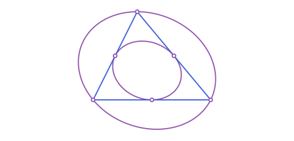
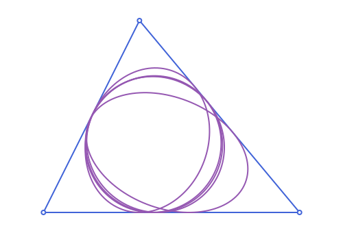

Triangles: Steiner & Other Inellipses
The running example, the scalene triangle used throughout this page:
using Apollonius
A, B, C = APPoint(0.0, 0.0), APPoint(8.0, 0.0), APPoint(3.0, 6.0)
t = APTriangle(A, B, C)Steiner ellipses
Two more ellipses are naturally associated with a triangle, both centered at the centroid: the Steiner inellipse, the (unique, maximum-area) ellipse inscribed in the triangle and tangent to the sides at their midpoints, and the Steiner circumellipse, the (unique, minimum-area) ellipse through the three vertices. steiner_inellipse and steiner_circumellipse build them.
inell = steiner_inellipse(t)
circumell = steiner_circumellipse(t)
inell.center ≈ circumell.center ≈ centroid(t)true
The circumellipse is always exactly the image of the inellipse under a homothety of ratio -2 about the centroid, the same ratio that relates a triangle to its own medial_triangle:
circumell.a ≈ 2 * inell.a, circumell.b ≈ 2 * inell.b(true, true)steiner_inellipse finds its foci via Marden's theorem: representing the vertices as complex numbers z1, z2, z3, the foci are the two roots of the derivative of (z-z1)(z-z2)(z-z3). steiner_circumellipse is built via conic_through_points, using the three vertices together with the reflections of two of them across the centroid (also on the ellipse, since any conic centered at a point is symmetric about it).
More named inellipses
Beyond Steiner's, five more classical inscribed ellipses:
| Function | Center | Foci |
|---|---|---|
lemoine_inellipse | midpoint of centroid & symmedian point | centroid, symmedian point |
brocard_inellipse | midpoint of the two Brocard points | second/first Brocard point |
macbeath_inellipse | midpoint of circumcenter & orthocenter | circumcenter, orthocenter (acute triangles only) |
mandart_inellipse | mittenpunkt | (fit through 5 points instead, see below) |
orthic_inellipse | symmedian_point | (acute triangles only) |
The first three are bifocal ellipses (see Conics: Ellipse, Parabola & Hyperbola): each is pinned down by requiring it pass through one specific extra point (a vertex of a particular cevian triangle). mandart_inellipse and orthic_inellipse instead fit a conic through 5 points directly via conic_through_points: the 3 vertices of the extouch_triangle/orthic_triangle it's tangent to, plus the point-reflections of 2 of them through the known center (also on the ellipse, since it's centrally symmetric about its own center).
mandart_inellipse(t).center ≈ mittenpunkt(t)truelemoine_inellipse(t).center ≈ midpoint(centroid(t), symmedian_point(t))
brocard_inellipse(t).center ≈ midpoint(first_brocard_point(t), second_brocard_point(t))truemacbeath_inellipse(t).center ≈ midpoint(circumcenter(t), orthocenter(t)) # requires an acute triangle
orthic_inellipse(t).center ≈ symmedian_point(t) # also acute-onlytrue